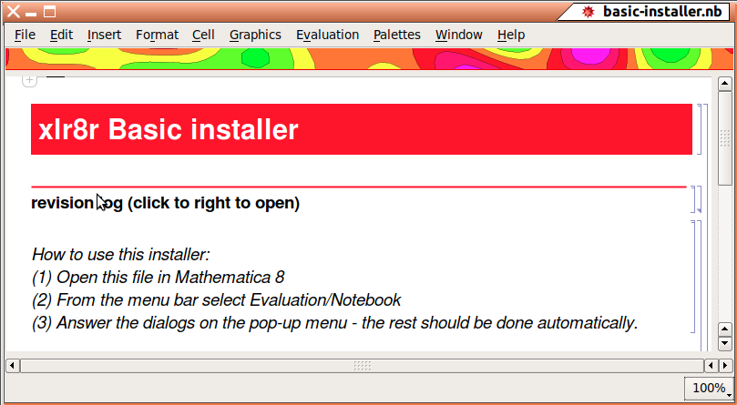

| Basic Install of xCellerator | Reference Home |
-
This procedure will install all files needed to run xCellerator, including the palettes, but will not download any of the help files or source code (.nb files).
Complete documentation is available online at http://xlr8r.info or may be downloaded separately as a zipped archive from the Sourceforge download site.
Complete source code may be obtained from the Launchpad Cellerator Bazaar Code Repository.
The remainder of this page only pertains to a basic xCellerator install.
The term xCellerator refers to the collection of software packages. The term Cellerator refers to the arrow description language used to express reactions. The term xlr8r refers to the specific Mathematica program xlr8r. The basic install procedure given here will also install the enzyme mechanism language kMech, the SBML interface modules MathSBML, and the stochasic Cellerator arrow interface xSSA. In addition, the basic xCellerator palettes will be installed. For more information regarding what each of these modules are, see the software documentation.
-
You must have Mathematica version 8 installed on your computer for xCellerator to work. Mathematica is commercial software and you must purchase a copy.
-
Download the latest xCellerator-Basic file release from Sourceforge. The file release will have a The same download works for all versions of Linux, Mac OS, and Windows for which there is a Mathematica implementation (the file is platform independent).
-
Extract the zip file to a folder.
-
Look inside the folder you just created, and look for the Mathematica notebook file installer.nb.
-
Open basic-install.nb in Mathematica.
-
From the menu bar in Mathematica, select "Evaluation" then "Notebook" to evaluate the entire notebook.

-
Read the license agreement and click "I Agree."

-
All xCellerator files (including xlr8r, MathSBML, kMech, and the palettes) should not be installed automatically; the following message tells you when you are finished. The installation was successful if the number of files that "failed to install" is zero. If you want to look at the log file whose name is listed, click VIEW LOG; otherwise, click OK to leave the installer.

-
Quit from Mathematica - Close all open notebooks and select Quit from the File option on the menu bar. Installation is now complete.